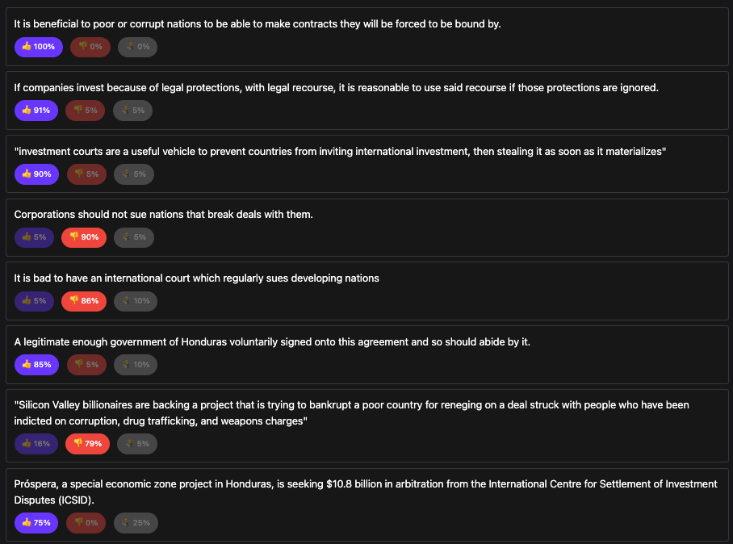
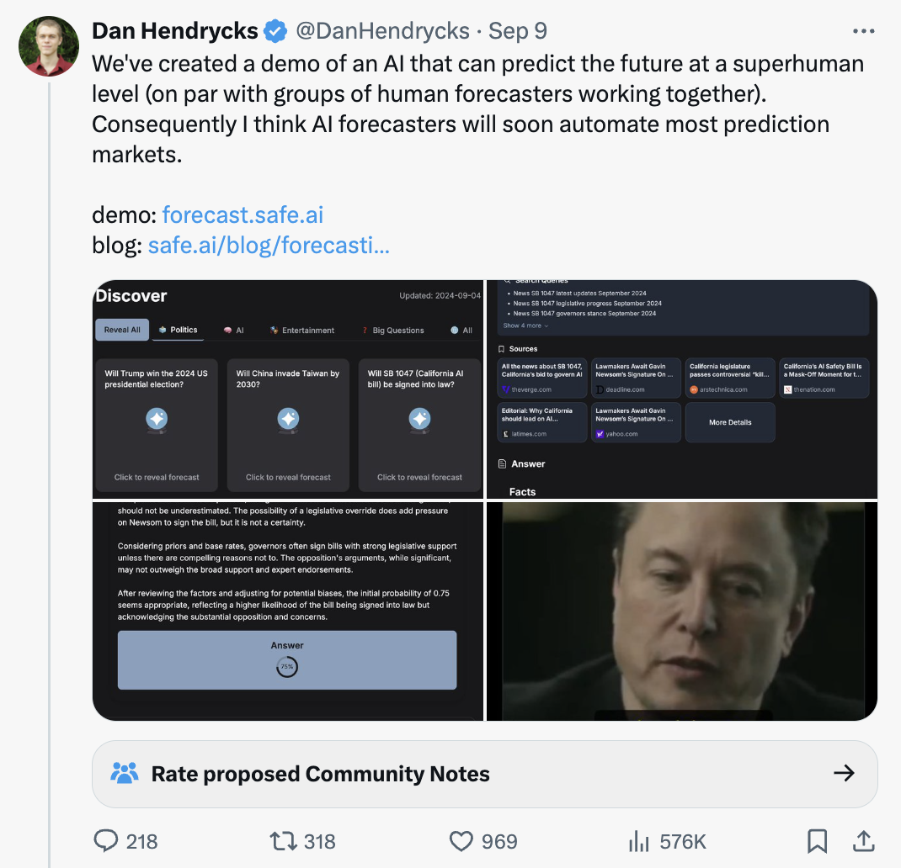
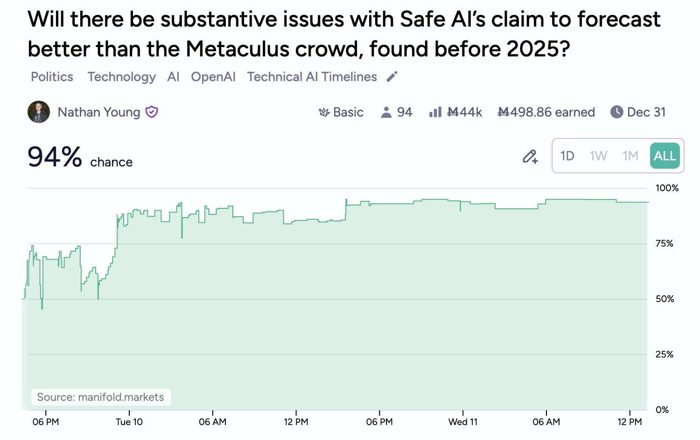

Debate
- With Ben Pace
- Ben and I did a private debate on whether EA should shut down.
- The format was as follows
- Each of us wrote a 1 page document
- We read through each other's documents
- Each of us led an hour of discussion, where we could push the other. Using LessWrong's dialoguing tool
- Takeaways
- It felt okay
- It was good to have a somewhat adversarial discussion with lots of room to think and breathe
- There wasn't a clear "so what"
- It pointed out the specific disagreements
- Not clear that we Saving progress in debates anywhere useful
- Between Garrison Lovely and Scott Alexander
- Garrison wrote a long post about Prospéra in Honduras. Scott responded. Each the responded 1 additional time.
- It felt to me like Lovely was more wrong, but in some intangible way
- I could have drawn an Argument tree but somehow that didn't feel good
- I read through the arguments, made a Viewpoints poll of them - https://viewpoints.xyz/polls/garrison-lovely-scott-alexander-prospera-debate?sort=consensus

{:height 613, :width 759}- For me I can feel much more confident in arguing if I see that there is consensus agreement or disagreement on the points I'm making
- Possibly this also decouples the discussion from being a Discussion proxy war where we aren't really discussing the thing at hand.
- Takeawas
- It feels satisfying to find the points of agreement, disagreement and confusion
- Still a bit of a 'So what?' problem
- I could turn it into a blog
- Between me and Dan Hendryks
- Hendryks tweeted the following.

{:height 633, :width 638}- This seemed suss to me.
- There are lots of clever people trying to build AI bots on Manifold. Their results seem nowhere near this good
- There was no buzz from any of my friends around AI suddenly getting a lot better at forecasting
- Superhuman doesn't mean "on par with groups of human forecasters working together"
- The Metaculus crowd median is hard to beat without looking at it and I would be surprised if an LLM had, without mainly just extremising.
- I made a market to push that I was suspicious.

{:height 450, :width 564}- Hard to overstate how bad this is
- Takeaways
- Very good discussion in the comments. This feels great and a good place for the discussion to be.
- 'So what?' problem - How does this result in Hendryks and co changing their behaviour?
- How does this Saving progress in debates
- How to create a space where Status is given to those who bet and win? Public figure forecasting leaderboard